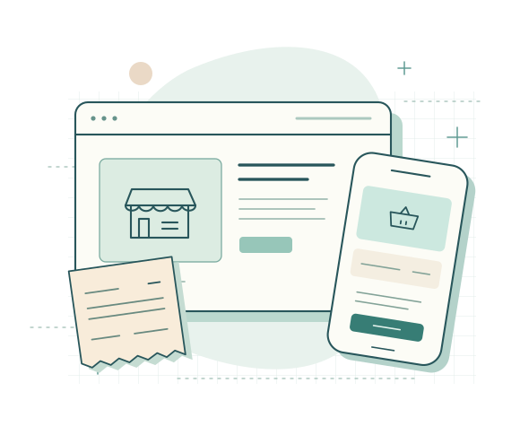

café migaTIENDA DE COMIDA
Tienda en línea · Cafetería
Pedidos para recoger, a domicilio o en el local.
Elige qué pedir y cómo pagar. Envía el pedido al negocio o prepara un mensaje para WhatsApp.
Diseño y soluciones para tu negocio
Te ayudamos a dar a conocer tu local, mostrar tus productos y simplificar tareas como tomar pedidos, revisar existencias o cerrar caja.
Trato directo con quienes hacen tu proyecto.

Entra a un negocio de ejemplo y prueba sus herramientas.
Elige qué pedir y cómo pagar. Envía el pedido al negocio o prepara un mensaje para WhatsApp.
Prueba como cliente, mesero o cocina. Registra un pedido y avisa al mesero cuando esté listo.
Encuentra la óptica con el servicio que buscas, consulta cómo llegar y prepara una solicitud de cita.
Consulta qué ofrece cada sede y elige dónde tomar un taller o pedir asesoría.
Separa efectivo, tarjeta y transferencias. Prueba un turno que cuadra, uno con faltante y otro con sobrante.
Probar corte por turnosFiltra locales por zona y servicios, consulta sus horarios y arma un pedido para recoger.
Probar sucursalesBusca productos, agrega piezas y comprueba cómo cambia el precio por volumen.
Probar el cotizadorEncuentra productos, revisa las cantidades y registra lo que entra o sale del almacén.
Explorar la ferreteríaExplora las prendas, elige talla y color y prepara un pedido de ejemplo.
Visitar la tiendaCuenta el efectivo, compara lo que debería haber y guarda el resumen de tu cierre.
Probar conteo de efectivoElige un servicio, busca un horario disponible y consulta tus citas de ejemplo.
Conocer la agendaLos ejemplos se abren en otra pestaña. Sus negocios, pedidos y cobros son de muestra.
En qué podemos ayudarte
Explora las funciones que podemos combinar para tu local, tienda o empresa.
Presenta tus servicios, cuenta qué hace especial a tu negocio y facilita que las personas te encuentren y te contacten.
Ayuda a tus clientes a ver lo que vendes y elegir con tranquilidad. Podemos preparar un menú para recibir pedidos por WhatsApp o una tienda donde el cliente haga su compra y el negocio vea el pedido en su propia pantalla.
Tú decides cómo quieres trabajar. Puedes empezar con un menú que arme pedidos por WhatsApp o tener una tienda que reciba pedidos y pagos directamente. Si tienes mesas, tus clientes pueden pedir desde su celular o con un mesero, y cocina recibe la comanda.
Consulta cuántos productos tienes, registra lo que entra o sale y revisa el efectivo al terminar el día.
Reúne tus servicios y horarios disponibles en una sola página. Tus clientes podrán elegir una cita y tú tendrás una vista más clara de tus reservas.
Si hoy repartes información entre mensajes, papel y hojas de cálculo, podemos reunir lo que usa tu equipo en una pantalla.
El precio depende de lo que quieras resolver y de cómo se usará. Puedes empezar con lo esencial y sumar funciones más adelante.
Por ejemplo, si quieres mostrar un menú, recibir pedidos por WhatsApp o cobrar en tu página y ver los pedidos en el negocio.
Puede ser una página que se abra por internet desde el celular o una herramienta de uso interno en la computadora del local.
Separamos lo que incluye, los tiempos, lo que cuesta ponerla en internet si lo necesitas y cómo será el mantenimiento.
Cotizamos cada proyecto según lo que necesite tu negocio. Te explicamos qué incluye y cuándo se renueva cada servicio.
Para tener apoyo continuo con tu sitio o herramienta.
Cubres el costo total acordado de tu proyecto en un solo pago.
En ambos planes. Los retoques visuales pequeños, como ajustar un color, un tamaño o un detalle de distribución, se hacen sin costo adicional mientras esté activo el plan mensual o durante el primer año del pago único. Los rediseños grandes y las funciones nuevas se cotizan por separado antes de empezar.
Somos KR
Somos un estudio independiente que hace páginas y herramientas a la medida de cada negocio. Desde la primera conversación, hablas con el equipo que hará tu proyecto.
Antes de empezar, acordamos qué incluye el trabajo, cuánto cuesta y cuándo lo entregamos. Durante el proyecto te mostramos avances para que puedas probarlos y decirnos qué ajustar. Al entregar, te explicamos cómo usarlo.
Antes de empezar
No. Puedes contarnos cómo trabajas hoy y qué quieres mejorar. Te explicaremos las opciones con palabras claras para que decidas con tranquilidad.
Depende de lo que necesite tu negocio. Primero conversamos y después te damos una propuesta con lo que incluye, el costo y los tiempos. Así sabrás qué estás contratando antes de empezar.
Depende de cómo quieras usarla. Si la publicamos en internet, cuidamos que se vea y funcione bien en celulares, tabletas y computadoras. Si la hacemos para trabajar sólo desde una computadora del negocio, se usa en ese equipo. Si después quieres consultarla desde el celular o desde otra sucursal, podemos incluirlo en la propuesta.
Podemos comenzar por lo que te resulte más útil y planear otras mejoras para después. La propuesta se ajusta a tus prioridades y a lo que buscas resolver.
El siguiente paso es conversar
Cuéntanos qué haces y qué te gustaría mejorar. No necesitas llegar con todo resuelto.